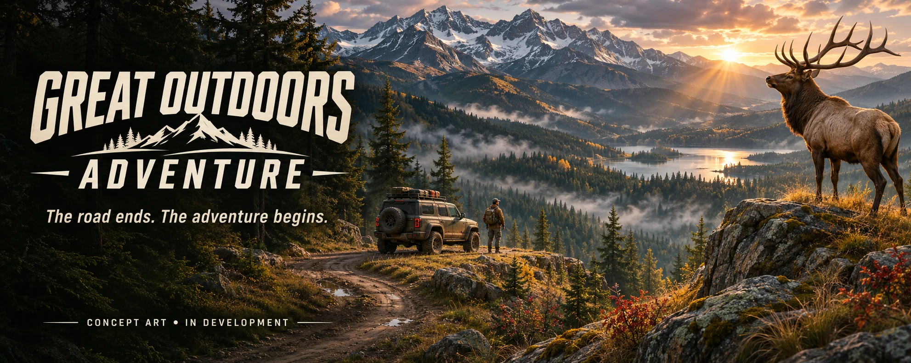
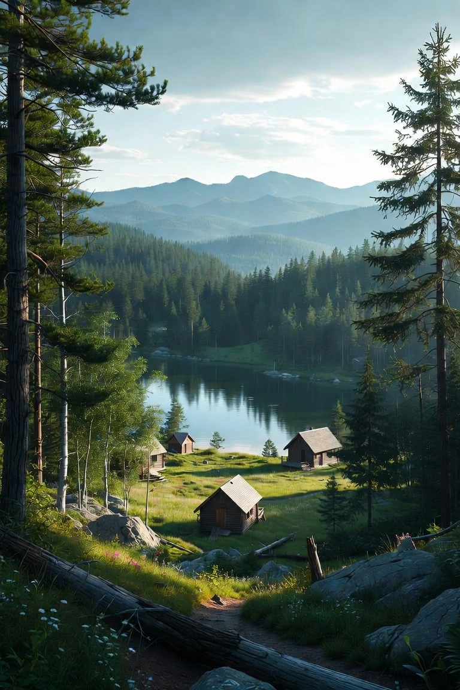
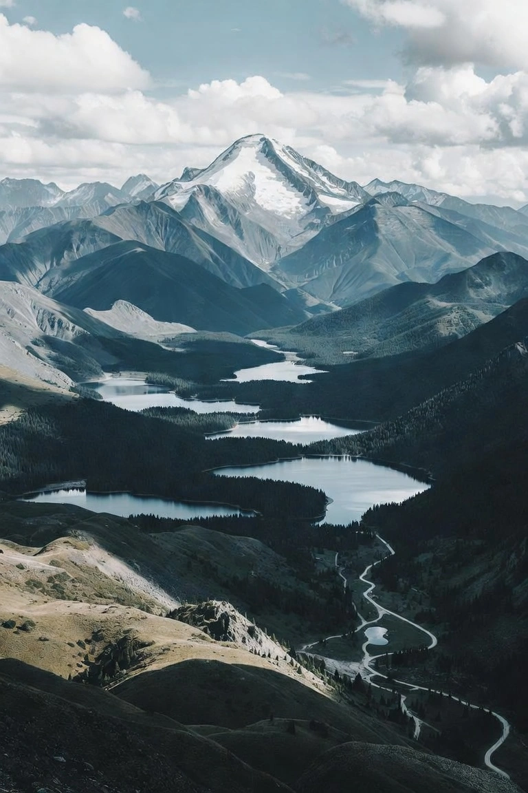
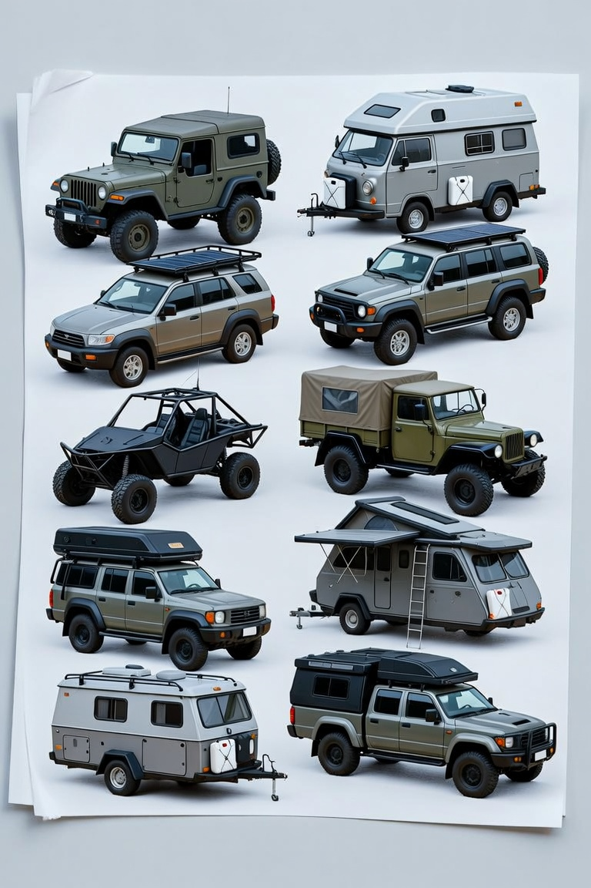
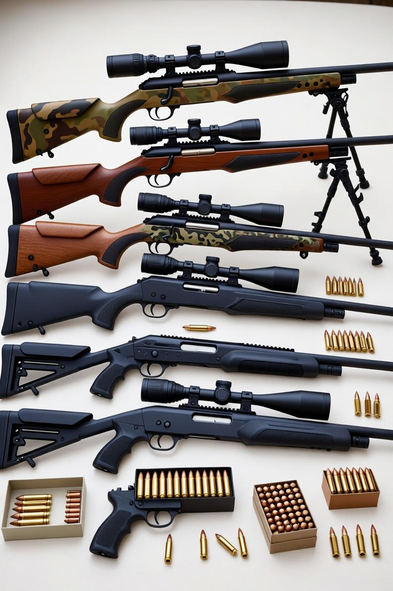
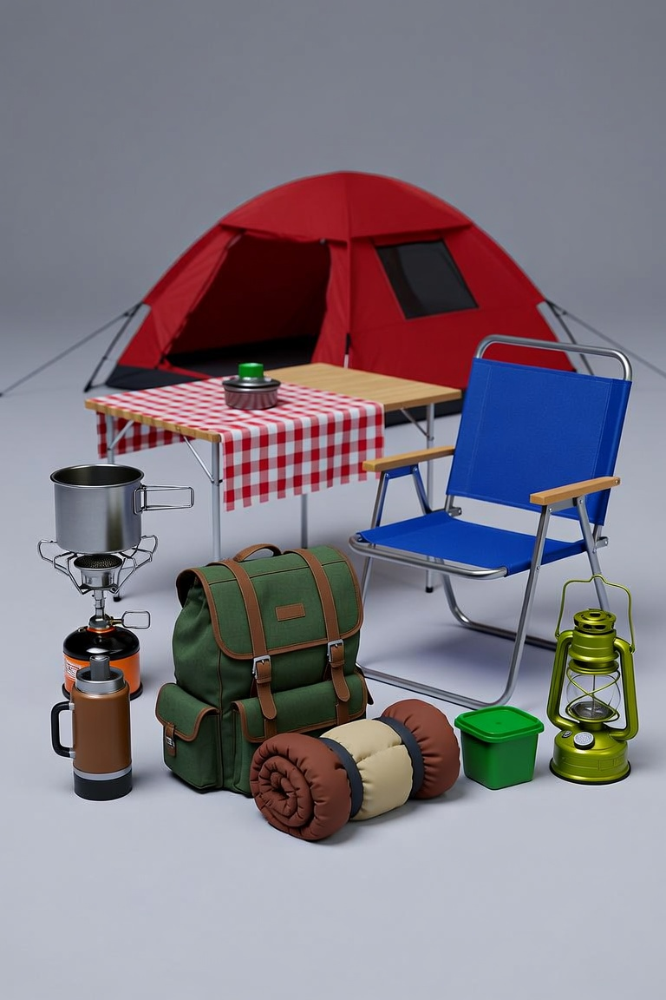

Drive beyond
Cross-country routes. Changing scenery. A vehicle suited to your next expedition.

FROM THE OPEN ROAD TO THE UNTAMED WILD
A new chapter beyond Long Valley. Drive cross-country, step into the wilderness, and make every expedition your own.
01 / THE ADVENTURE
Leave the highway. Follow your curiosity.
Great Outdoors Adventure is a planned expansion of the Long Valley driving experience. Travel through changing environments, park at points of interest, and continue on foot into hunting country.
Choose your route, prepare your loadout, and pursue wildlife across open landscapes. The proposed scoring system rewards successful hunts, with bonuses for headshots and clean kills.
This site presents the vision. The supplied Long Valley build is now included with controller support, an expedition loadout, and deployable camping props. The playable build now includes a VR lookout and AR tabletop mode on compatible WebXR devices, plus a desktop tabletop preview. On-foot hunting and scoring remain in development.
Cross-country routes. Changing scenery. A vehicle suited to your next expedition.
Park at map destinations and explore the surrounding wilderness on foot.
Find wildlife and earn points through the planned precision and clean-kill bonuses.
NEW / TWO MORE REASONS TO TAKE THE LONG WAY
Two new destination areas in the playable Long Valley world, inspired by your images. Choose a location in-game to travel there or mark a waypoint and drive.

A new river branch joins the valley lake, with cabin scenery and a green morning setting.
Explore River Valley ↗
Arrive on the high ridge track, with a snowy environment and an alpine shelter overlooking the valley.
Explore Snowy Mountain ↗Images are supplied visual references. The playable areas use the game’s terrain and new scenery; they are not exact reconstructions.
02 / A WINDOW INTO THE WILDERNESS
Explore an atmospheric Three.js landscape.
Drag to look around. Scroll to move closer.
Scenic & loadout prototype · no hunting gameplay yet
Loading wilderness…
VR mode needs a compatible WebXR headset and browser. Desktop and touch exploration are available without a headset.
03 / WILDLIFE ENCOUNTERS
From the smallest movement in the brush to a silhouette on the ridgeline. Six planned wildlife species, one wide-open adventure.
A classic woodland encounter. Deer are part of the planned wildlife roster for the hunting expansion.
PLANNED SPECIES · BEHAVIOR AND HABITATS TO BE DEFINEDWildlife roster: deer, elk, bears, foxes, rabbits, and coyotes. Additional species can follow as development expands.
04 / THE EXPEDITION OUTFITTER
Build your expedition before you leave the road.
Choose an off-road or camping vehicle, equip a weapon, and pack the items you want at base camp. Your choices save on this device. Launch the game to use your loadout and deploy your campsite.
Named vehicles use the included truck or buggy as visual stand-ins. Driving and camp deployment are playable; shooting, custom vehicle models, towing and survival systems remain in development.
Loading expedition catalog…
THE GARAGE
10 spreadsheet vehicles + 4 camping concepts.
Spreadsheet values are draft game settings, not verified real-world specifications.

Style reference. Images are not exact models of every named vehicle.
THE ARMORY
Seven reference-inspired weapon choices.
Compatible ammunition options follow your selection.

Draft virtual ammunition categories. Weapon handling, damage and compatibility rules will be finalized in the game build.
BASE CAMP
Pack or remove individual items.
Deploy your selected items in the playable driving build.

GREAT OUTDOORS ADVENTURE
Open roads. Wild places. Your next great adventure.
Back to the wilderness ↗Original Long Valley studio project ↗ Mindblown sign-in may be required